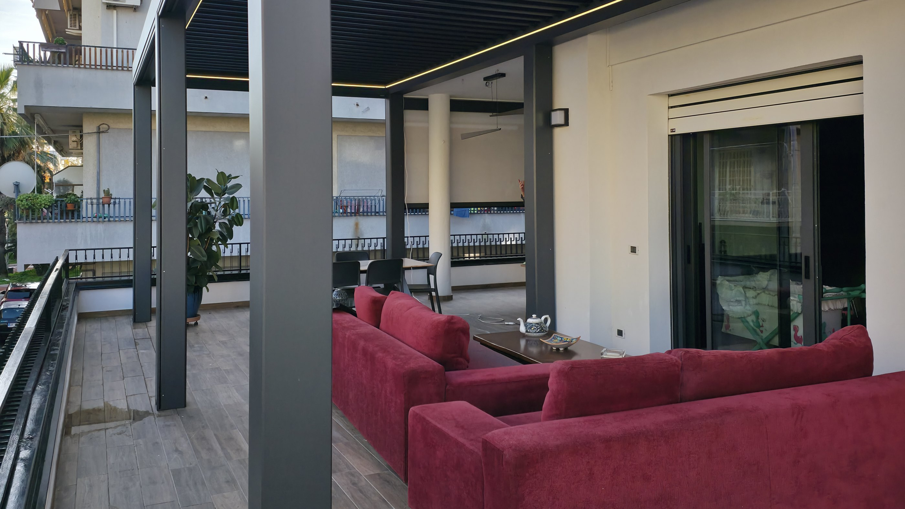
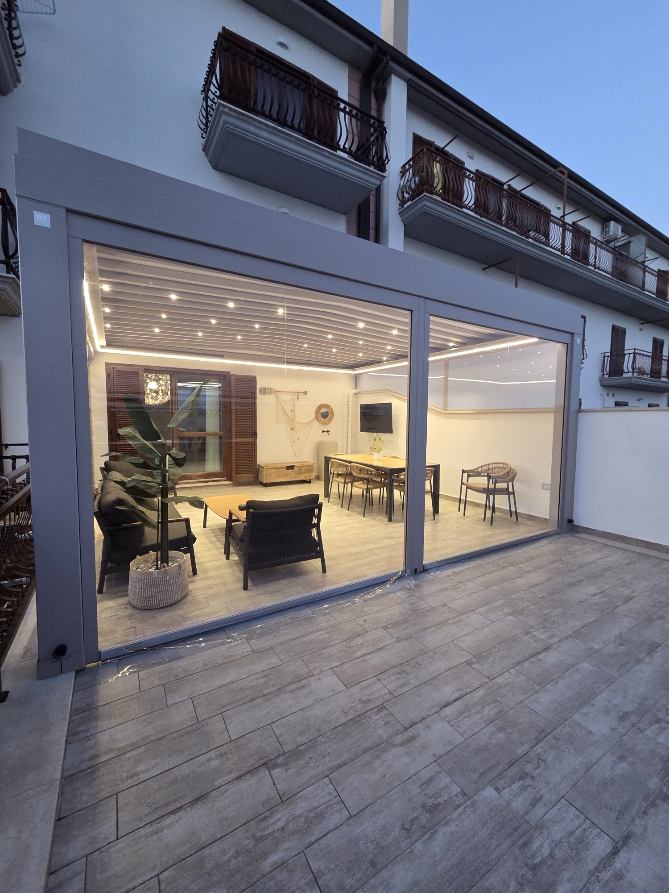
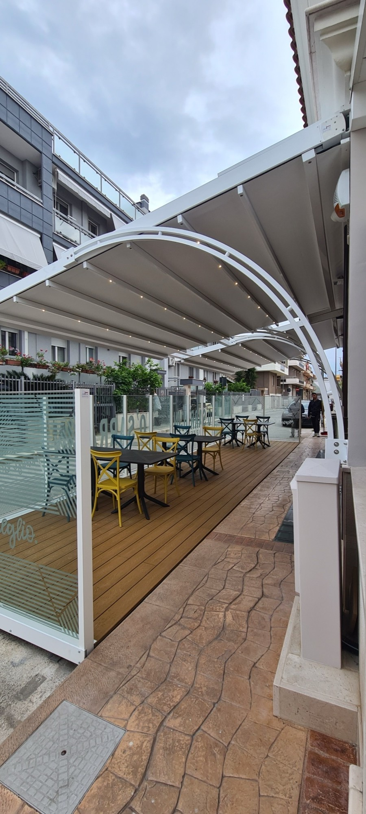
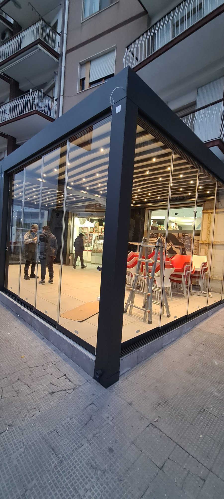

Tende da sole
A bracci, a caduta e a cappottina, manuali o motorizzate.

Pergole, vetrate, tende da sole e tende tecniche per case e locali. Progettate sul tuo spazio e montate da noi.

Pergole con copertura in tessuto o a lamelle, luci a LED integrate, chiusure laterali in vetro o con tende tecniche. Si aprono e si chiudono con il telecomando.
Una pergola leggera trasforma il terrazzo in un salotto all'aperto: protegge dal sole di mezzogiorno e lascia passare la luce.

DehorsCoperture, paraventi in vetro satinato e pavimentazioni per i tavoli all'aperto. Il locale guadagna posti a sedere in ogni stagione.
Chiedi per il tuo locale
Pannelli in vetro scorrevoli che si impacchettano di lato. La vista resta libera, il balcone diventa una veranda luminosa.
A bracci, a caduta e a cappottina, manuali o motorizzate.
Teli tesi nelle guide laterali, che reggono il vento.
Motori e telecomandi per tende e coperture.